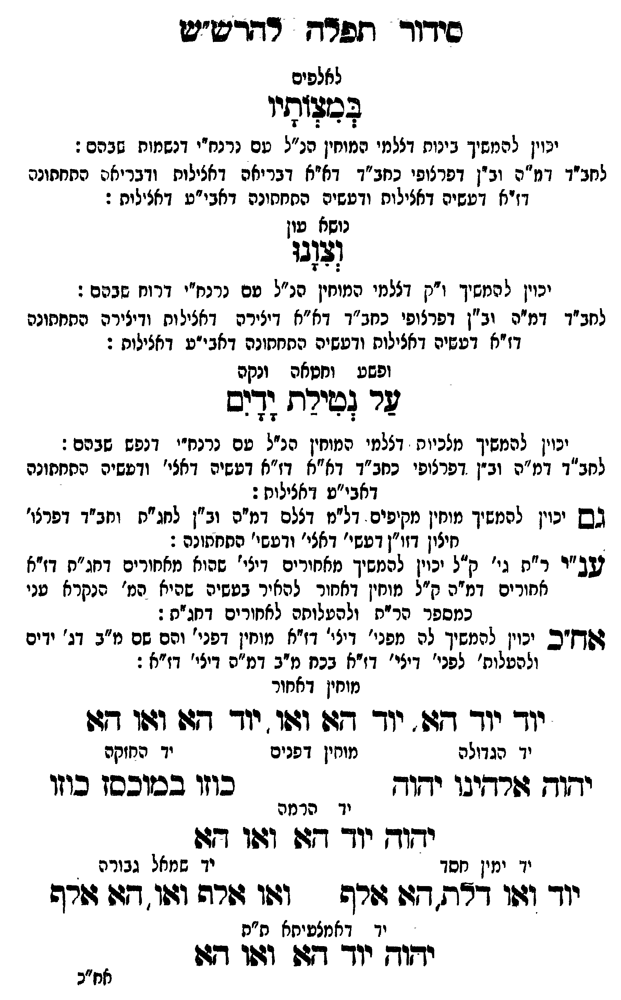

Neue Klartextfassung
(לאלפים) במצותיו [יכוין להמשיך בינות דצלמי המוחין הנ"ל עם נרנח"י דנשמות שבהם: לחב"ד דמ"ה וב"ן דפרצופי כחב"ד דא"א דבריאה דכללות ורביעיה התחתונה דז"א דעשיה דכללות ורביעיה התחתונה דאבי"ע דכללות:] (נושא עון) וצונו [יכוין להמשיך ו"ק דצלמי המוחין הנ"ל עם נרנח"י דרוח שבהם: לחב"ד דמ"ה וב"ן דפרצופי כחב"ד דא"א דיצירה דכללות ודיצירה התחתונה דז"א דעשיה דכללות ורביעיה התחתונה דאבי"ע דכללות:] (ופשע וחטאה ונקה) על נטילת ידים [יכוין להמשיך מלכיות דצלמי המוחין הנ"ל עם נרנח"י דנפש שבהם: לחב"ד דמ"ה וב"ן דפרצופי כחב"ד דא"א דז"א דעשיה דאצי' ורביעיה התחתונה דאבי"ע דכללות:] [גם יכוין להמשיך מוחין מקיפים דל"מ דצלם דמ"ה וב"ן לחג"ת וחב"ד דפרצו' חיצון דזו"ן דעשי' דאצי' ורביעי' התחתונה:[?]] [ענט"י ר"ת גי' ק"ל יכוין להמשיך מאחורים דילי' שהם מאחורים דחג"ת דז"א אחורים דמ"ה ק"ל מוחין דאחור להאיר בעשיה שהיא סו' הסתרה פני כמספר הק"ל ולהעלותה לאחורים דחג"ת:] [אח"כ יכוין להמשיך לה מפני' דילי' דז"א מוחין דפני' והם שם מ"ב ר"ת דג' ידים ולהעלות' לפני' דילי' דז"א בכח מ"ב דמ"ה דפני' דז"א:] [מוחין דאחור] יוד יוד הא, יוד הא ואו, יוד הא ואו הא === טבלה === [טור ימין — יד הגדולה, יד ימין חסד] יהוה אלהינו יהוה יוד ואו דלת, הא אלף [טור אמצעי — מוחין דפנים, יד הרמה] יהוה יוד הא ואו הא [יד רחמיותה ת"ת [?]] יהוה יוד הא ואו הא [טור שמאל — יד החזקה, יד שמאל גבורה] כוזו במוכסז כוזו ואו אלף ואו, הא אלף === סוף טבלה ===
Original gegen neue OCR · Niqqud für Vergleich ausgeblendet
Original
(לאלפים) במצותיו [יכויןK017-001 להמשיך בינות דצלמי המוחין הנ"ל עם נרנח"י דנשמות שבהם: לחב"דK017-002 דמ"ה וב"ן דפרצופי כחב"דK017-003 דא"א דבריאה דכללות ורביעיה התחתונה דז"אK017-004 דעשיה דכללות ורביעיה התחתונהK017-005 דאבי"ע דכללות:] (נושא עון) וצונו [יכוין להמשיךK017-006 ו"ק דצלמיK017-007 המוחין הנ"ל עם נרנח"י דרוח שבהם:K017-008 לחב"ד דמ"ה וב"ן דפרצופי כחב"ד דא"א דיצירה דכללותK017-009 ודיצירה התחתונה דז"א דעשיה דכללות ורביעיה התחתונה דאבי"ע דכללות:] (ופשעK017-010 וחטאה ונקה) על נטילת ידים [יכויןK017-011 להמשיך מלכיותK017-012 דצלמי המוחין הנ"ל עםK017-013 נרנח"י דנפש שבהם: לחב"ד דמ"ה וב"ן דפרצופי כחב"ד דא"א דז"א דעשיהK017-014 דאצי' ורביעיהK017-015 התחתונה דאבי"ע דכללות:] [גםK017-016 יכוין להמשיך מוחין מקיפים דל"מK017-017 דצלם דמ"ה וב"ן לנה"חK017-018 וחב"ד דפרצו' חיצון דזו"ן דעשי' דאצי' ורביעי' התחתונה:] [ענט"י ר"תK017-019 גי' ק"ל יכוין להמשיך ∅K017-020 מאחורים דילי' שהם מאחורים דחג"תK017-021 דז"א אחורים דמ"ה ק"ל מוחין דאחור להאיר בעשיהK017-022 שהיא סו' הסתרה פניK017-023 כמספר הק"לK017-024 ולהעלותה לאחורים דחג"ת:] [אח"כ יכויןK017-025 להמשיך לה מפני' דילי'K017-026 דז"א מוחין דפני' והם שם מ"ב ר"תK017-027 דג' ידים ולהעלות'K017-028 לפני' דילי'K017-029 דז"א בכח מ"ב דמ"ה דפני' דז"א:] [מוחין דאחור] יוד יוד הא, יוד הא ואו, יוד הא ואו הא === טבלה === [טורK017-030 ימין — יד הגדולה, יד ימין חסד] יהוה אלהינו יהוה יוד ואו דלת, הא אלף [טור אמצעי — מוחין דפנים, יד הרמה] יהוה יוד הא ואו הא [יד רחמיותה ת"ת ] יהוה יוד הא ואו הא [טורK017-031 שמאל — יד החזקה, יד שמאל גבורה] כוזו במוכסז כוזו ואו אלף ואו, הא אלף === סוף טבלה ===K017-032
OCR · fehlbar
סידוך תפרש רחרט"ש לאלפים לבצותיו ינויןK017-001 להמשיך בינות דצלמי המוחין הנ"ל עם נרנח"י דנשמות שבהם: לנזב"ךK017-002 דמ"ה וב"ן דפרצופי בחב"דK017-003 דא"א דבריאה דאצילות ודבריאי: החחתונה דזיאK017-004 דעשיה דאצילוח ודטשים החחחונהK017-005 דאבי"ע דאצילית : נושא עון (ל(:) יכוין ל המשיךK017-006 ו"ק דצליK017-007 המוחין הנ"ל עם נרנח"י דרוח שבהם :K017-008 לחב"ד דמ"ה וב"ן דפרצופי כחב"ד דא"א דיצירה דאציל וחK017-009 ודיצירה התחתונה דז"א דעשיה דאצילות ודעשיה החחחונה דאבי"ט דאצילות : ופשע.K017-010 וחטאה ונקה לר גטעירד ודנס יכויןK017-011 להמשיך מלכיוחK017-012 דצלמי המוחין הנ"ל טםK017-013 נרנח"י דנפש שבהם: לחב"ד דמ"ה וב"ן דפרצופי כחב"ד דא"א דז"א דטשיהK017-014 דאצי' ודטשיהK017-015 התחתונה דאבי"ט דאצילות: גשK017-016 יכוין להמשיך מוחין מקיפים דל"זK017-017 דצלם דמ"ה וב"ן לחג"חK017-018 וחב"ד דפרצו' חיצון דזו"ן דעשי' דאצי' ודעשי' התחתונה : שב"ר ר"חK017-019 גי' ק"ל יכוין להמשיך מאחירים דיצי' שהואK017-020 מאחורים דחג"חK017-021 דז"א אחורים דמ"ה ק"ל מוחין דאחור להאיר בטשיהK017-022 שהיא המ' הנקרא טניK017-023 כמספר הר"תK017-024 ולהעלותה לאחורים דחג"ת : ג(חז"כ ינויןK017-025 להמשיך לה מפני' דיצי'K017-026 דז"א מוחין דפני' והם שם מ"ב ∅K017-027 דג' ידים ולהטלות'K017-028 לפני' דיצי'K017-029 דז"א בכח מ"ב דמ"ה דיצי' דז"א : מוחין דאחור יוך יודך דזן - יודך גדו וד:ו. יוך דזל וזפו דזו יד הגדולה מוחין דפנים יד החזקה ישוך זורחיבך ישוך בוזו בכוכסן בוזו יד הרמה יודן יוך דזג (07ו דף: י-K017-030 ימין חסד יךK017-031 שמאל גבורה יך וזוו ד"ת. דגו גורש וזו שרה וגו. דגן דורש יך דאמצטיחא ח"ת ישוד יוך זן וו דש ח"כK017-032